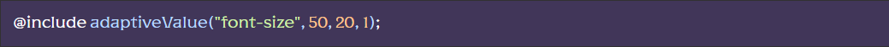
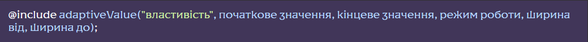

Використання міксину
Щоб працювати з міксином потрібно в SCSS селекторі викликати сніпет av:
Базовий режим роботи міксину:
Де:
- Властивість – CSS-властивість, значення якого необхідно адаптувати. Можна вказати будь-яку властивість, значення якого вказується у цифрах.
- Початкове значення– стартове значення властивості в пікселях, пишемо число без px. Зазвичай вказується по макету.
- Кінцеве значення – фінальне значення властивості в пікселях, пишемо число без px. Значення, до якого ми хочемо прийти на менших ширинах екрану.
Приклади:
Алгоритм работы миксина
Міксин працює на основі значень змінних $minWidth, $maxWidth, $maxWidthContainer, $containerPadding и $containerWidth розташованих у блоці “Налаштування адаптивної сітки” файлу scss/style.scss
У підсумку, за замовчанням, міксин працюватиме так:
Якщо $maxWidthContainer більше нуля, то значення властивості змінюватимуться в проміжку ширин від $containerWidth до $minWidth. Тобто, по всій ширині контейнера, що обмежує.
При цьому, якщо ширина екрана більша ніж $containerWidth, то значення властивості дорівнюватиме початковому значенню. Якщо ширина екрана менша ніж $minWidth, то значення властивості дорівнюватиме кінцевому значенню.
Якщо$maxWidthContainer дорівнює нулю, то значення властивості змінюватимуться в проміжку ширин від $maxWidth до $minWidth.
Додаткові налаштування та режими роботи
Режими роботи
Поведінку міксину ми можемо налаштувати вказавши режим роботи.
Режим роботи – може приймати числові значення 0 / не вказано , 1, 2 або 3:
- 0 / не вказано - Якщо ширина екрану більше ніж ширина від, то значення властивості дорівнює початковому значенню. Якщо ширина екрану менше ніж ширина до, то значення властивості дорівнюватиме кінцевому значенню.
- 1 - Міксин буде працювати тільки між мінімальною та максимальною шириною екрану, або тільки у зазначених проміжках якщо вони задані (про проміжки дивись далі). За цих ширин, значення властивості будуть за замовчюванням або успадковуватися від предків.
- 2 - Якщо ширина екрана більше ніж ширина від, то значення властивості дорівнює початковому значенню. Якщо ширина екрану менше ніж ширина до, значення властивості буде за замовчуванням або успадковуватися від предків.
- 3 - Якщо ширина екрана більше ніж ширина від, то значення властивості буде за замовчуванням або успадковуватися від предків. Якщо ширина екрана менше ніж ширина до, то значення властивості дорівнюватиме кінцевому значенню.
Приклад:
Власні проміжки
Міксин дозволяє вказати свій проміжок ширини всередині якого адаптуватиметься значення властивості.
- ширина від– стартова ширина менше за яку почнеться адаптація, пишемо число без px.
- ширина до– кінцева ширина до якої буде адаптуватися значення властивості, пишемо число без px.
Увага!При вказанні проміжків необхідно обов’язково вказати режим роботи
Приклад:
Також ми можемо використовувати кілька міксинових викликів з різними проміжками:
У прикладі станеться таке: у проміжку ширин екрану від 800px до 480px значення властивості font-size буде чуйно адаптуватися від 50px до 20px, а в проміжку від 480px до 320px чуйно адаптуватися від 20px до 10px. Ширше 800px значення властивості буде 50px, вже 320px значення властивості буде 20px.
Увага!Не використовуйте додаткові медіа-запити для роботи з чуйною властивістю. Все, що вам потрібно, можна налаштувати за допомогою комбінацій кількості адаптивних властивостей, режимів і проміжків
Розташування
Міксін adaptiveValue знаходиться у файлі scss/base/mixins.scss